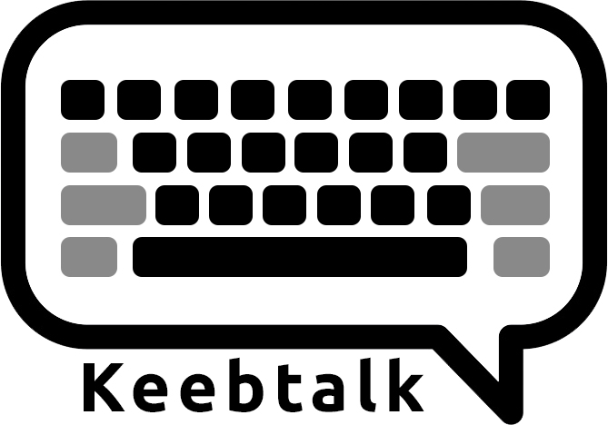
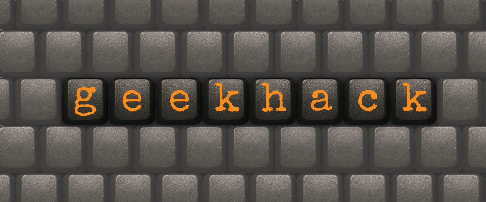

Keybord Forums that I like

I like Keebtalk due to its modern user interface and clean website. They strive to try new things for their website and are willing to change. The community is very active as well.

The r/mk subreddit contains a diversified community from all around the globe. It contains many resources for beginners and is really what got me interested in mechanical keyboards

Geekhack will always hold a special place in my heart due to a very warm community there. They are the main forums for group buys and interest checks that spurs the market.